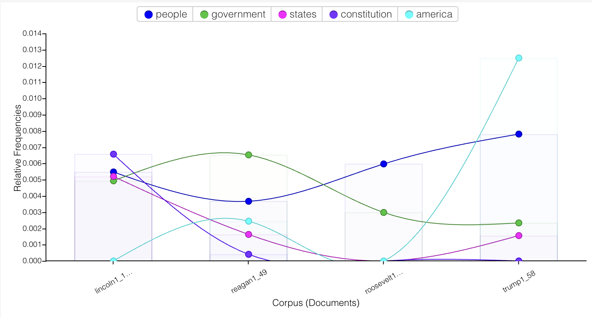
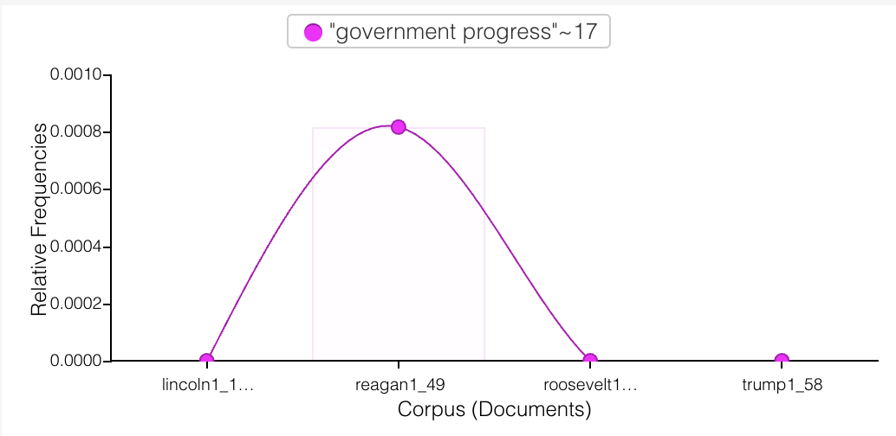
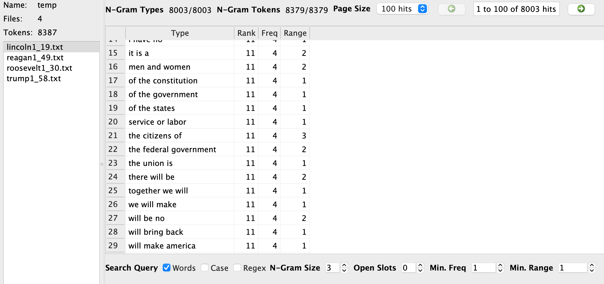
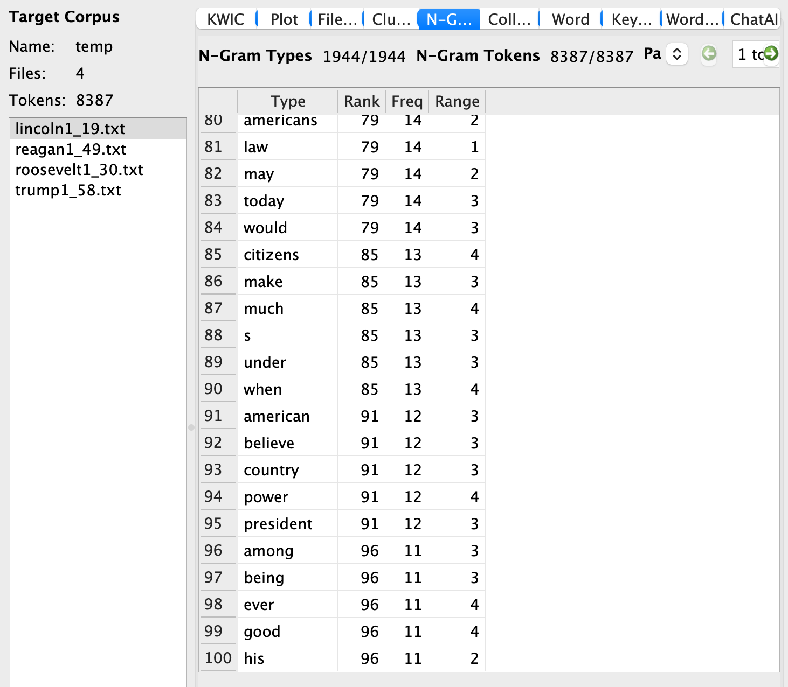
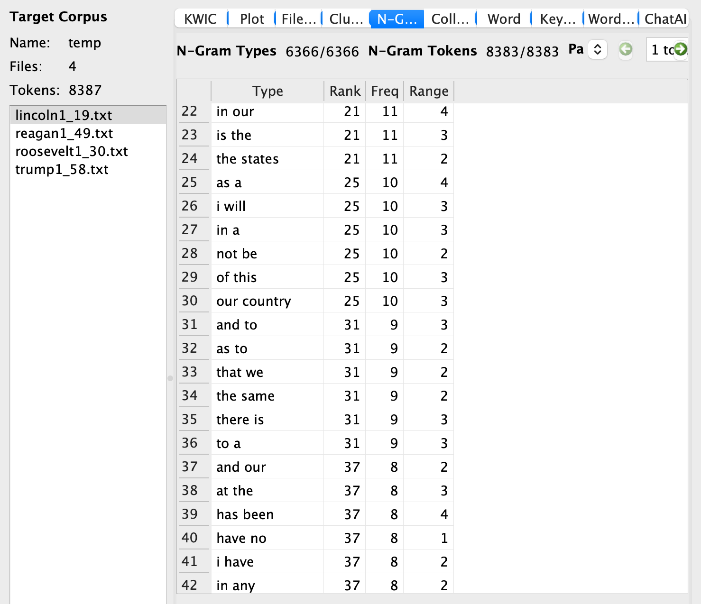
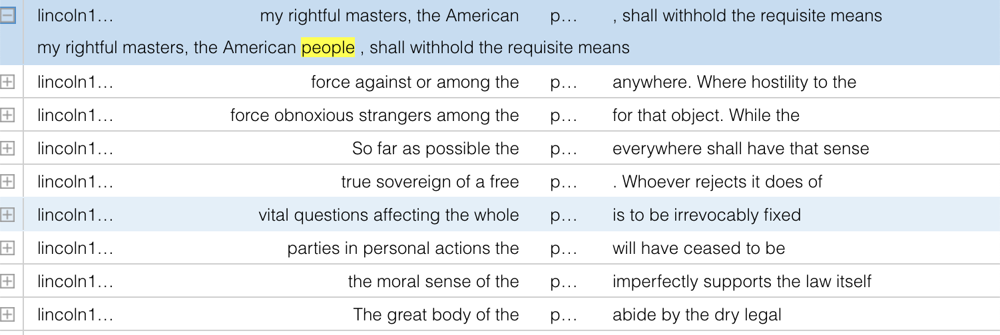
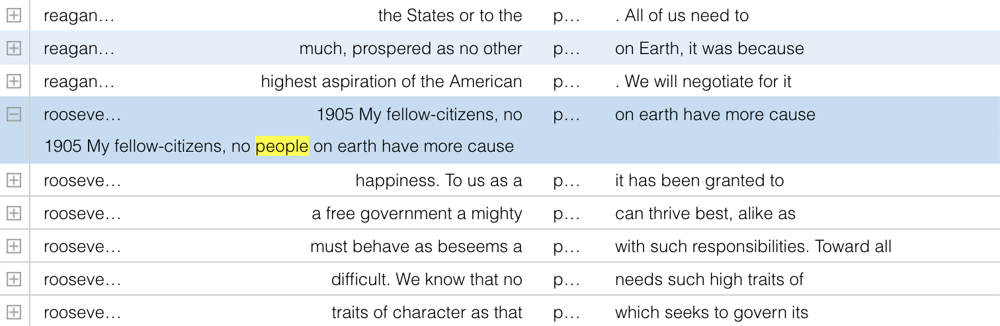
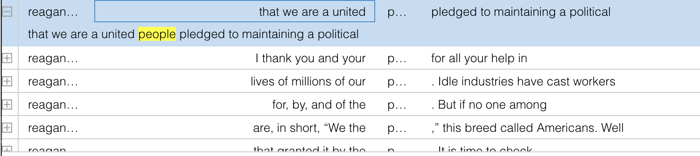
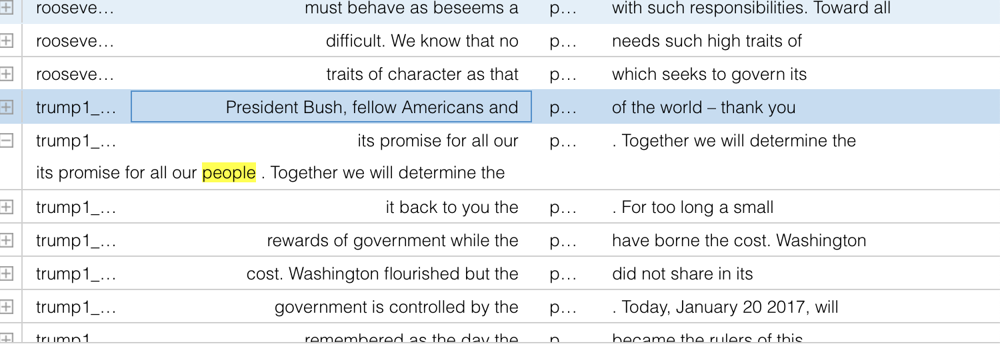

For my Corpus Analysis, I was immediately drawn to the selection of presidential inauguration addresses offered within the courses Github repository. I have created a customized Corpus that analyzes the presidential inauguration addresses of Presidents from the Republican Party over the course of American History. My texts choices span from the year 1861 to 2017 and I have chose 4 presidents in total; President Abraham Lincoln, Theodore Roosevelt, Ronald Reagan, and Donald J. trump. The history of the Republican Party has always been intriguing to me: specifically, the evolution of the Republican Party . Over decades, the core values of the major United States political party, the Republican party, has evolved throughout the years. My selection of texts will allow me to examine this evolution through a quantitative means using the two text analysis tools provided. Here are my approaches to identify pattern and change within these texts: 1. What are the top three words/phases that are common within all 4 presidential speeches? 2. Find similarities and differences amongst the Presidents speeches: 3. (This one is for humor) How often does each president use patriotical language (intense American verbiage)? 4. Find a selection of words/phrases that (3 each) that are unique to the President (no other President has used said words/phrases). I will be comparing and contrasting each approach and collecting data from each question.









The game has several ways to immerse oneself into the game. You are given a list of options at almost every notice to choose to explore surroundings; trade with other people, check your map, ask around for advice or news; and check your own inventory. However, despite the complexities in the game the graphics are simple pixels.
The game is not complex, since the things you can control lie entirely on strategy and personal responsibility. You can’t actually explore your surroundings, that is very limited. Each stop has similar options but sometimes you won’t have all the options to choose from. For example, you can not buy supplies from every stop. But on the other hand, some stops may have a wide range of people to trade with compared to other stops.
You can only control your own character, a traveler. In the beginning of the game you can choose from three different traveler options; a banker, carpenter, or farmer. However, you can’t be a Native American or a Doctor. Your only goal is to survive the Oregon Trail as a traveler.
In this game, you are challenged “before you know it”. At first, the travel is simple, but several challenges turn up as once you are further along your journey. This forces the player to strategize, make risks, and call the shots for your “party”.
There are several objects and things to interact with in The Oregon Trail. You can buy supplies for your “party”, trade your supplies with other people, hunt for food, stop at gravesites to read gravestones, ask for advice, purchase services to cross rivers or for medical health.
I played the Oregon Trail once before, and it was in middle school during American history. Learning about the Trail of Tears in any American public school means you probably end up playing the Oregon Trail for an insight on what it was like to be a colonist during this era of history. With that being said, the music from the Oregon Trail is traumatizing, and that I do remember from playing the first time. The only time there is music is during stops, and the music is a loud series of random music notes that are so loud that the speaker sounds like it is going to explode.
Only in the beginning of the game do you get a “meta” commentation of the game, however the game is in second person for the rest of the game.
Although this game is set in the past, it allows one to understand the state of the world back then and give an idea of the daily challenges that the average American would go through. However, I can see the beginnings of cross-cultural communication in its early stages in this game. It can make one reflect on where we are as an American society today.
I believe this game is perfect at where it is at, it does use politically incorrect terminology regarding Native Americans. So maybe the language can be edited. Other than this, the charm of The Oregon Trail is for its eerie and simplistic game design. It almost emulates the times it is based off of.